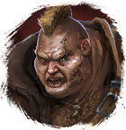
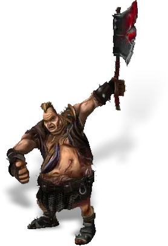

Открыть в интерактивной вики →

| Уровень | лёгк. 40 / норм. 50 / тяжел. 60 |
|---|---|
| Зоны атаки | ближняя, дальняя, |
| Шанс дропа 100% — уровни | лёгк. 1-40 / норм. 1-40 / тяжел. 1-50 |
| Шанс дропа 90% — уровни | лёгк. 41-50 / норм. 41-50 / тяжел. 51-60 |
| Шанс дропа 70% — уровни | лёгк. 51+ / норм. 51+ / тяжел. 61+ |
| Группа боссов | Непокой |
| Сила (PvE) | лёгк. 628 / норм. 1082 / тяжел. 2776 |
| Аспект арены | Gherudu |
| Здоровье | лёгк. 2600 / норм. 5100 / тяжел. 9600 |
| Мана | 2000 |
| Выносливость | 5000 |
Команда


Навыки


Дроп
 Элементарный глиф
Элементарный глиф  Путь непокоя
Путь непокоя 
 II
II 
 Даймонит 3
Даймонит 3 | Рары | Синергетики | Эпики | |||
 Рары Рары  Рары Рары  Рары Рары | 20 ур. |  | |||
Прочее:  Элементарный глиф Элементарный глиф  Путь непокоя Путь непокоя | |||||
Требования для входа
тяжел.: Путь непокоя
Путь непокояПуть по картам
Статистика
 |  |  | |||
| Уровень: 40 | Уровень: 50 | Уровень: 60 | |||
Здоровье: 2 600 Мана: 2 000 Выносливость: 5 000 | Здоровье: 5 100 Мана: 2 000 Выносливость: 5 000 | Здоровье: 9 600 Мана: 2 000 Выносливость: 5 000 |
Умения
| Обычная атака | Землетрясение Бросок |
Иммунитеты / особые умения
-
Локация
Башня бандитов